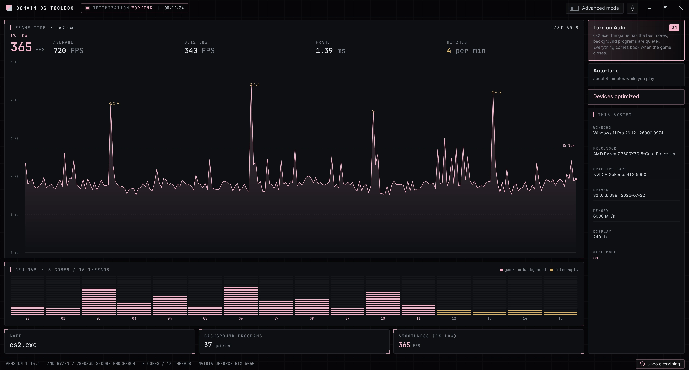
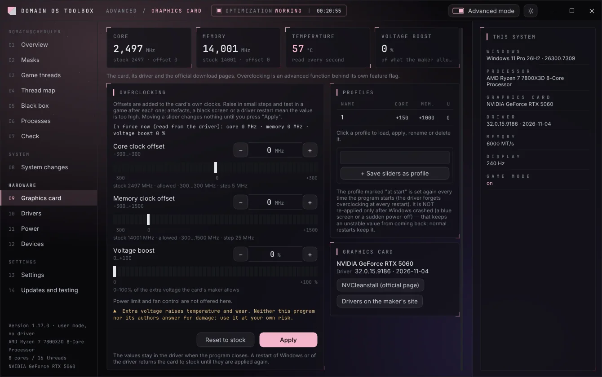

▍ Domain OS Toolbox 1.15.0
Your game gets the best cores
Toolbox is the gaming app Domain OS installs. Turn on Auto, start a game, and it gives the game the best CPU cores and quiets everything else in the background. Close the game and everything goes back to how it was.

What's new in Toolbox 1.15.0
The main points in short, the full list under the button. The Windows changes of playbook 2.1.1 are on the main page.
- Signed updates arrive by themselves, with a backup key
- AMD Radeon overclocking next to NVIDIA, behind its own flag
- A notice when a new playbook is out
- Built on GitHub with a build attestation
All changes (8)
- Signed updates. Toolbox checks for updates once a day and installs only an update with a valid signature and checksum. If the new version does not start, the previous one comes back by itself.
- A backup update key is kept offline: if the main key is lost or leaked, updates keep working and the old key is revoked.
- It tells you when a new playbook is out: one tray notice per version, never during a game, and an "Open the website" button.
- AMD Radeon overclocking (RX 5000–9000, RX 470–590, Vega) next to NVIDIA: inside the driver's limits, voltage only lowered, "Reset to stock", the crash guard. Behind a feature flag, off by default. How to turn it on. New: please report your card and driver.
- Settings and backups live in a folder only administrators can change (
%ProgramData%\Domain OS Toolbox); every restored value is checked against what Toolbox itself writes. - System tools are started by their full path; an old "Apply at start" GPU mark is asked about once, with the profile's values shown.
- No freeze when a game starts; core assignments are put back after a crash.
- Built in public on GitHub with a signed build attestation:
gh attestation verifynames the workflow and the exact commit.
What to expect
Honestly, so nobody is disappointed.
Average FPS usually barely changes. The app helps with smoothness: fewer drops and stutters. In numbers, that is your 1% low.
It doesn't help on every PC. If the graphics card is the limit, there may be no difference. That's normal. The app hasn't been tested on laptops yet.
It does not work with every game. Games under a kernel anti-cheat (Vanguard — Valorant; EasyAntiCheat — for example Fortnite, Apex Legends, Rust; BattlEye — for example Rainbow Six Siege, PUBG and others) are never opened by Toolbox. While an anti-cheat client that protects the game is running (for example FACEIT with CS2), the game itself is not touched either. In these cases only the background part works: programs behind the game are quieted, but the game gets no cores of its own, so the effect is smaller. In games whose threads have no names, the app recognises them only approximately.
How to use it
Four steps. The app does the rest. The Domain OS Toolbox shortcut is on your desktop, and the app starts with Windows.
- Press "Turn on Auto". The app finds the game by itself, gives it the best cores and quiets background programs. When the game closes, everything goes back.
- Press "Auto-tune" and keep playing as usual for about eight minutes. The app compares settings by frame time.
- Press "Apply" when auto-tune finishes. The new values only take effect when you press it.
- Press "Optimize devices" once with the game closed, and restart the PC. "Put back" undoes it.
Each key device gets a core of its own: the USB controller with the mouse, the graphics card, the network card. Storage is not touched, MSI only where the device supports it, laptops are not touched. If Windows did not start or crashed after the change, everything is reverted by itself. The button shows the state: "restart needed" or "active".
What the app does
While you play. No input needed.
The best cores for the game
The most important parts of the game run on the fastest CPU cores and don't get in each other's way.
A quieter background
Your browser and other background programs get fewer resources and low disk priority while you play, so the game reads from disk first. OBS, Discord, audio and VR software and game launchers are left alone.
Cores free of extra work
Your mouse, graphics card and network also keep the CPU busy. The app notices which cores they occupy and moves the game to free ones.
Auto-tune
Tries different settings while you play, compares smoothness and offers the best one. Nothing changes until you press "Apply".
Quiet timers
Some background apps, like RGB lighting and monitoring tools, wake the CPU thousands of times a second. The app calms that down while you play.
Everything goes back
Before any change, the app remembers how things were and restores them when the game closes. Even after a crash.
GPU overclocking (NVIDIA)
An advanced function. It is hidden behind a feature flag, and you use it at your own risk.
- Turn on "Advanced mode" at the top right.
- Open the "Settings" gear → "Feature flags".
- Turn on "GPU overclocking (clock offsets and voltage boost, NVIDIA)".
- The sliders appear on the "Graphics card" page: core, memory and voltage, profiles, "Apply at start", "Reset to stock".
Crash guard: if a blue screen or sudden power-off happened after an overclock, the profile is not applied at the next start. An ordinary restart does not reset the overclock.
Wrong values make the card unstable, and extra voltage shortens its life.

For advanced users
The "Advanced mode" switch at the top right.
Everything else lives there: the processor map, core masks, threads and processes, device interrupts, power and graphics card. Regular users don't need it.
Toolbox has no switches that turn off Windows protection. So games with anti-cheat work as usual.
Safety
The app works like any normal program.
No drivers
Only standard Windows features, no drivers of its own.
Stays out of the game
Injects nothing into the game and doesn't touch its memory.
Open source
The source of DomainScheduler, the core of the app, is on GitHub.
Download
If you install the Domain OS playbook, you don't need this separately: it installs Toolbox and puts a shortcut on the desktop.
- file
- DomainOS-Toolbox-1.15.0.exe · 71.1 MB
- sha-256
- f82487cd4d692fc0a8d63b2b510b2ad27a2b1b06ea718551de45e6634dc0a604
- check
- Get-FileHash .\DomainOS-Toolbox-1.15.0.exe
- system
- Windows 10 and 11, 64-bit
- install
- not needed, run as administrator